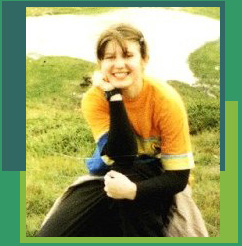
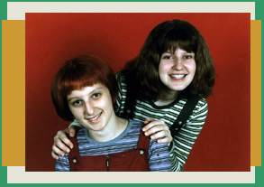

|
Welcome to the
"About Me" section where you will find some information
about me and my interests. Thank you for visiting! =]
My name is Victoria and I live in Rousse, Bulgaria.
I'm 18 years old and I study in the English Language School of Rousse "Geo Milev".
I enjoy going out and having fun with friends, travelling, cycling and in-line skating.
First of all, I'm a teenager so I listen to music all the time. My favourite artists are Britney Spears, Jennifer Lopez and Darren Hayes, but I like
to listen to Linking Park, Lenny Kravitz, Staind, Madonna, Avril Lavigne,
Michelle Branch, Pink, Puddle of Mudd, Justin Timberlake, Jamiroquai, Craig David, Atomic Kitten and many more. My favourite Bulgarian
artist is Slavi Trifonov.
I watch MTV and other music TV channels thus I'm interested in music videos. My favourite show on MTV is "Making the Video".
I really enjoy watching how a music video or a movie was created. I love the "Bonus Materials" of the DVDs, because of the deleted
scenes, the  behind the scenes materials, the commentaries of the
director, the producers or the actors, etc. I watch all kinds of movies - dramas, comedies, thrillers, fantasy, etc. My favourite
ones are "Titanic", "Save The Last Dance", "The Count of Monte Christo",
"Ocean's Eleven" and "10 Things I Hate About You", "Cruel Intentions".
Apart from music and movies, I'm a multimedia maniac. I'm crazy about audio, video and graphic processing. I love to create web sites (you
can see here what I have done so far). I would like one day to be not only a web designer
but also a web master. I show interest in creating DVD menus or enchanted music CDs.
At the moment I work with:
- Fractal Design Painter, Adobe Photoshop, Corel Draw 10, Macromedia Flash
- Adobe Premiere 6.5, TMPGEns Plus, Sonic Foundry Stream Anywhere,
Windows Media On-Demand Producer, Wave Lab, MyFlix by Media Ware Solutions
- Microsoft FrontPage 2000, Office 2000
Other favourite software: WinAmp, GetRight, CuteFTP, KaZaA, mIRC, ICQ, CyberLink PowerDVD, WinRAR, WinZip, ACDSee, RealPlayer, Macromedia Director,
Macromedia Freehand, Audio Catalyst, Norton Antivirus.
My favourite computer games are: Age of Empires, War Craft, Counter Strike, Tony
HawkPro Skater, Need For Speed, Collin Mc'Rae, Insane, etc.
Next come singing and dancing. I used to dance folk dances and play
accordeon as a child. This made me love the stage. From time to time I make up my own choreography. My favourite choreographies
are Britney Spears's "I'm A Slave For You", Aaliyah's "Try Again" and Billy Crawford's "Trackin'",
and Usher is my favourite dancer...
I read magazines a lot. "Egoist" and "For Me" are my favourites. Sometimes
I buy "Bliasak" - a gossips magazine, "Club M", "Ekran" ("screen" in English) - a magazine for movies. Now I'm a big fan of Harry Potter and I'm eager to read the 5th book and
to see the "Harry Potter and the Chamber of Secrets" movie.
Finally, let me tell you something about my family.
I have a sister who just graduated the oldest American
university in Moskow - "Touro". She is 21 years old and is just like me.
We have almost one and the same interests about music, movies, computers, etc.
Our parents - Valerii and Svetloslava - are really nice people. We
owe everything to them. They taught us being courageous and strong and at the same time kind and honest. We owe to them our sense of
humor and desire for life.
e-mail: victoriavm@abv.bg
|| icq# 31723932
All HTML and
layout features are © ViKiTo's Web Site
All Rights Reserved.
|